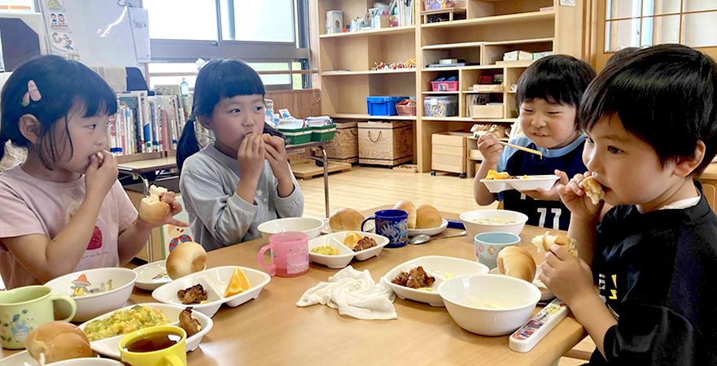
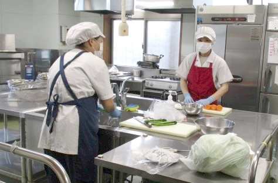

できたてを大切に
園内の給食室で、子どもたちの昼食を心を込めて用意します。
心とからだを育てる、毎日の給食
子どもたちが楽しみにしている給食。季節の食材を取り入れ、栄養のバランスと食べやすさを大切にしながら、毎日手作りしています。
園内の給食室で、子どもたちの昼食を心を込めて用意します。
旬の野菜や行事食を取り入れ、食材との出会いをつくります。
友だちと一緒に食べる時間を通して、食への関心を育みます。
衛生管理を徹底し、アレルギーにも配慮して提供します。

